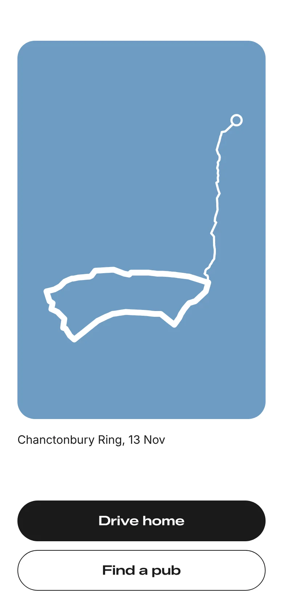

Set it once
Where you set off from, how long you’ll drive, how long you want to walk. Tell Woden once and it remembers.

Discover somewhere new
No googling, no asking AI, no list of 400 trails to scroll. Woden finds one established walk you haven’t done, picked for the day and its weather. Google Maps drives you there on proper roads, keeping off single-track lanes where it can.

A map you hardly need
Black and white, north up, the hills shaded like an old Ordnance Survey map. Glance at it if you’re unsure. Otherwise follow the signs and look up.

Keep the day
No questions at the end, no photos to upload. You get one picture of your day: the drive and the walk as a single line, coloured by the weather on the walk. Cold days come out blue, warm days gold, wet days darker.
